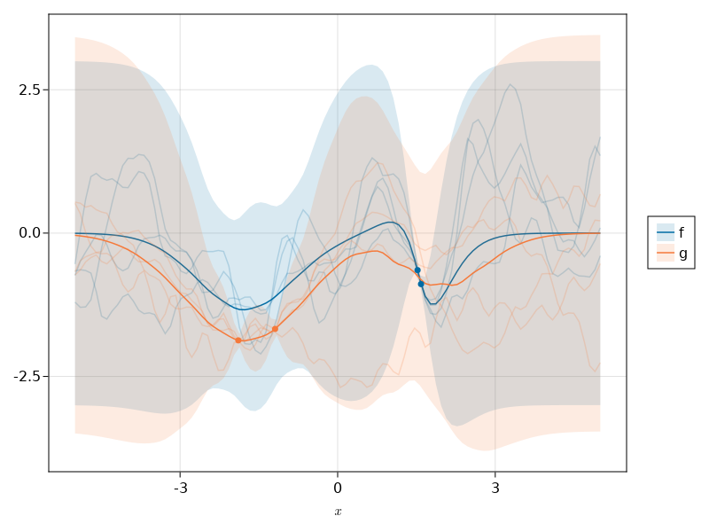

Convolution via Quadrature

You are seeing the HTML output generated by Documenter.jl and Literate.jl from the Julia source file. The corresponding notebook can be viewed in nbviewer.
This example implements the convolution of a GP against the function ϕ(x) = exp(-x^2), i.e.: (Lf)(x′) = ∫ ϕ(x′ - x) f(x) dx It does this approximately using Gauss-Hermite quadrature, the implementation for which is provided by FastGaussQuadrature.jl. The implementation is limited to GPs whose index set is the real line.
using AbstractGPs
using AbstractGPsMakie
using CairoMakie
using FastGaussQuadrature
using KernelFunctions
using LaTeXStrings
using LinearAlgebra
using Literate
using Random
using Stheno
import AbstractGPs: AbstractGP, mean, cov, var
using CairoMakie: RGB
using Stheno: DerivedGPDefine new affine transformation
The mean function is assumed to have zero-mean. The cross-kernel (function of x′) is ∫ ϕ(x′ - x) k(x, y) dx, and the kernel (function of x′ and y′) is ∫ ϕ(x′ - x) k(x, y) ϕ(y′ - y) dx dy.
convolve(f::AbstractGP) = DerivedGP((convolve, f), f.gpc)
const conv_args = Tuple{typeof(convolve), AbstractGP}
mean((_, f)::conv_args, x::AbstractVector{<:Real}) = zeros(length(x))
cov(args::conv_args, x::AbstractVector{<:Real}) = cov(args, x, x)
var(args::conv_args, x::AbstractVector{<:Real}) = var(args, x, x)
function var(args::conv_args, x::AbstractVector{<:Real}, x′::AbstractVector{<:Real})
return diag(cov(args, x, x′))
end
_quadrature(f, xs, ws) = sum(map((x, w) -> w * f(x), xs, ws))
function cov((_, f)::conv_args, x::AbstractVector{<:Real}, x′::AbstractVector{<:Real})
num_points = 15
xs, ws = gausshermite(num_points)
cols_of_C = map(x′) do x′n
col_elements = map(x) do xn
_quadrature(
x -> _quadrature(x′ -> only(cov(f, [xn - x], [x′n - x′])), xs, ws), xs, ws
)
end
end
return reduce(hcat, cols_of_C)
end
function cov(
(_, f)::conv_args,
f′::AbstractGP,
x::AbstractVector{<:Real},
x′::AbstractVector{<:Real},
)
num_points = 15
xs, ws = gausshermite(num_points)
cols_of_C = map(x′) do x′n
col_elements = map(x) do xn
_quadrature(x -> only(cov(f, [xn - x], [x′n])), xs, ws)
end
end
return reduce(hcat, cols_of_C)
end
function cov(
f′::AbstractGP,
args::conv_args,
x::AbstractVector{<:Real},
x′::AbstractVector{<:Real},
)
return collect(transpose(cov(args, f′, x′, x)))
endcov (generic function with 86 methods)Some plotting config
pt_per_unit() = 1
font_size() = 12
listing_font_size() = 10
page_width() = 6
size_from_inches(; height=4, width=4) = 72 .* (width, height)
set_theme!(font="Times")
function colours()
return Dict(
:blue => RGB(0/255, 107/255, 164/255),
:cyan => RGB(75/255, 166/255, 251/255),
:red => RGB(200/255, 82 / 255, 0 / 255),
:pink => RGB(169/255, 90/255, 161/255),
:black => RGB(0.0, 0.0, 0.0),
:orange => RGB(245/255, 121/255, 58/255),
)
end
shapes() = [:utriangle, :diamond, :square, :circle, :cross]
band_alpha() = 0.3
sample_alpha() = 0.2
point_alpha() = 1.0
function plot_band!(ax, x_plot, fx, colour, label)
ms = marginals(fx)
symband!(
ax, x_plot, mean.(ms), std.(ms);
bandscale=3,
color=(colours()[colour], 0.5 * band_alpha()),
label=label,
)
end
function plot_sample!(ax, x_plot, fx, colour)
gpsample!(
ax, x_plot, fx;
samples=4, color=(colours()[colour], sample_alpha()),
)
end
function plot_gp!(ax, x_plot, fx, colour, label)
plot_band!(ax, x_plot, fx, colour, label)
plot_sample!(ax, x_plot, fx, colour)
endplot_gp! (generic function with 1 method)Plot some stuff
Build a GPPP in which one GP is a convolution of the other, using the convolve transformation defined above.
let
f = @gppp let
f = GP(with_lengthscale(Matern52Kernel(), 0.5))
g = convolve(f)
end
rng = Xoshiro(123)
x_f_obs = GPPPInput(:f, rand(rng, 2) .+ 1)
x_g_obs = GPPPInput(:g, -rand(rng, 2) .- 1)
x_obs = vcat(x_f_obs, x_g_obs)
y = rand(Xoshiro(123), f(x_obs, 1e-3))
y_f, y_g = split(x_obs, y)
f_post = posterior(f(x_obs, 1e-3), y)
x_plot = range(-5.0, 5.0; length=100)
x_f = GPPPInput(:f, x_plot)
x_g = GPPPInput(:g, x_plot)
x = vcat(x_f, x_g)
fig = Figure()
# Plot posterior.
ax = Axis(fig[1, 1]; xlabel=L"x")
plot_gp!(ax, x_plot, f_post(x_f, 1e-6), :blue, "f")
plot_gp!(ax, x_plot, f_post(x_g, 1e-6), :orange, "g")
scatter!(ax, x_f_obs.x, y_f; color=colours()[:blue], markersize=7)
scatter!(ax, x_g_obs.x, y_g; color=colours()[:orange], markersize=7)
# Plot legend.
Legend(fig[1, 2], ax; orientation=:vertical)
fig
end
This page was generated using Literate.jl.